Harefuah Journal Articles from PubMed
Artificial intelligence has burst into our lives with great vigor in recent years. We encounter it in all areas of life, as well as in the field of medicine.
Transformative Potential of AI in Healthcare
by M Bekbolatova, 2024 - Artificial intelligence (AI) has emerged as a crucial tool in healthcare with the primary aim of improving patient outcomes and optimizing healthcare processes.
Economics of Artificial Intelligence in Healthcare
by NN Khanna, 2022 - AI development improves existing systems, particularly medical imaging and coronary artery disease diagnosis, reducing human error.
Publié DECEMBRE 2024 - Par Nourredine, photos OPEN SOURCE
Un voyage fascinant dans nos entrailles
Une exposition à la Cité des sciences de la Villette retrace, d’après le texte et les dessins du «Charme discret de l’intestin», le trajet sinueux des aliments à travers nos entrailles. Un périple chaotique et drolatique au fabuleux pays des bactéries.
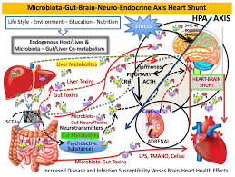 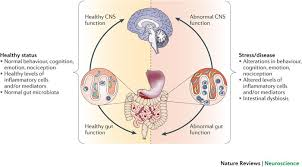 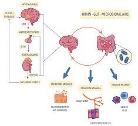
Photo Marguerite Bornhauser
Et voilà comment on s'est fait avaler par une grande bouche, baignée de salive (en fait du sang filtré) avant de ressortir des heures plus tard comme une… merde. Mais une merde ébahie par la fantastique mécanique de notre système digestif...
L'aventure dans notre estomac et intestins
Après la bouche, on a emprunté cette berline de luxe qu'est l'œsophage, que l'on a descendu avec grâce (sans nous vanter) au gré des contractions bien orchestrées (mouvement péristaltique) de cet organe...
La route ensuite s'est faite longuette. Intestin grêle : 5,50 mètres à parcourir. Oui mais caressée par des villosités douces comme du velours. Arrivée dans le côlon : plus qu'un 1,50 m de creux et de bosses à traverser...
Un microbiote étonnant et essentiel
C’est là, au cœur de ce tube, qu’on a poussé un cri de fascination. Là que gigotent, boulottent, transforment les 100 000 milliards de bactéries avec lesquelles nous partageons notre vie. Un petit peuple aujourd’hui chéri par la recherche médicale : le désormais célèbre microbiote...
Une exposition immersive et scientifique
Voyager dans nos entrailles, observer un vrai estomac et des intestins (nettoyés et plastinés), les localiser sur une table d'autopsie virtuelle, et plonger dans le monde de la flore intestinale, voilà ce que propose la dernière expo de la Cité des sciences et de l'industrie...
Quelques faits fascinants
Les bactéries dans notre intestin : plus de cellules bactériennes que humaines.
La communication entre le cerveau et l'intestin : L'intestin abrite 200 millions de neurones.
Les fibres et la santé du microbiote : Il est important de consommer 30 grammes de fibres par jour pour nourrir notre microbiote.
Les toilettes à l'occidentale : Le confort de la position accroupie pour déféquer est recommandé.
Informations pratiques
L’exposition est à voir jusqu’au 4 août 2019 à la Cité des sciences. Découvrez plus d'informations sur cite-sciences.fr.
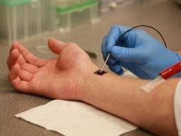 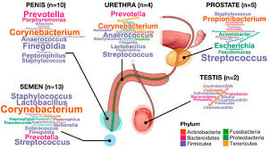
Microbiote du Pénis : Influence des Rapports Sexuels
31 mars 2023 | Sciences | Commentaires fermés sur Microbiote du pénis : l’influence des rapports sexuels
Une récente étude apporte de nouvelles données sur le microbiote du pénis. Elle révèle que les bactéries présentes dans l’urètre masculin proviennent de deux sources distinctes, dont l’une est propre aux hommes ayant des rapports sexuels vaginaux.
L’urètre n’est pas épargné, et comme bon nombre d’organes, il est colonisé par des micro-organismes. Cependant, il est possible de distinguer non pas un, mais deux microbiotes au sein du pénis. C’est dans une étude parue le 21 mars 2023 dans Cell Reports Medicine portant sur 110 hommes que les résultats révèlent la présence de bactéries dans l’urètre masculin, issues de deux sources différentes.
Microbiote du Pénis UT1 : Le Microbiome de Base
Selon les chercheurs, l’urètre de l’homme abrite généralement un microbiome de base caractéristique. Celui-ci est localisé à l’extrémité du pénis et se compose en majorité de bactéries aérobies, c’est-à-dire capables de se développer en présence d’oxygène.
Ainsi, la plupart des échantillons prélevés montrent une composition bactérienne simple, homogène et peu diversifiée. En effet, le microbiote UT1 est principalement constitué de Corynebacterium et de Streptococcus, avec une abondance marquée en S. mitis.
Microbiote du Pénis UT2 : Le Microbiome Dépendant des Rapports
D’après l’étude, ce microbiome dépend de l’activité sexuelle de l’homme. Les effets des différents types de relations sexuelles (vaginales, orales et rectales) ont été étudiés.
Ainsi, les hommes ayant eu des rapports sexuels vaginaux ont développé une deuxième communauté bactérienne, localisée un peu plus profondément dans l’urètre.
Comparativement au microbiote analysé dans l’UT1, la communauté bactérienne serait plus :
Riche
Complexe
Diversifiée
Anaérobie
Les espèces observées dans cet urétrotype sont par ailleurs celles couramment trouvées chez les femmes atteintes de vaginose bactérienne telles que Gardnerella vaginalis, ce qui suggère qu’elles colonisent les hommes en bonne santé à partir de leurs partenaires féminines.
Ainsi, les bactéries associées à la dysbiose vaginale ne sont détectées que chez les hommes ayant des rapports sexuels vaginaux.
La Vaginose Bactérienne, une Possible IST* Transmissible par l’Homme ?
Actuellement non considérée comme telle, les chercheurs émettent pourtant cette hypothèse d’après les résultats obtenus. En effet, il est possible de détecter l’influence du microbiote vaginal sur le microbiote pénien jusqu’à 60 jours après le rapport. Selon eux, ceci pourrait expliquer la transmission de ces bactéries auprès des différentes partenaires et ainsi causer la vaginose bactérienne.
Néanmoins, des études complémentaires sont nécessaires pour valider ou invalider ces résultats.
LC
Références
*Infection Sexuellement Transmissible
Image : Freepik
TOH E, XING Y, GAO X, JORDAN JJ, BATTEIGER TA, BATTEIGER BE, VAN DER POL B, MUZNY CA, GEBREGZIABHER, WILLIAMS JA, FORTENBERRY LJ, FORTENBERRY JD, DON Q, NELSON DE. Sexual behavior shapes male genitourinary microbiome composition. Cell Rep Med. 2023, 4(3):100981
Le Microbiote Vaginal
Qu'est-ce que le microbiote vaginal ?
Le microbiote vaginal fait référence à la population microbienne présente dans le vagin, composée principalement de bactéries, mais aussi de levures, de virus et d'autres micro-organismes. Chez une femme en bonne santé, les bactéries dominantes sont souvent des lactobacilles, des bactéries bénéfiques qui aident à maintenir un environnement vaginal sain et protégé contre les infections. Ce microbiote est un écosystème dynamique, dont la composition peut varier selon les facteurs hormonaux, l'âge, l'alimentation, l'activité sexuelle et l'utilisation de certains médicaments.
Le rôle du microbiote vaginal
Le microbiote vaginal joue plusieurs rôles essentiels pour la santé et le bien-être intime :
Protection contre les infections : Les lactobacilles produisent de l’acide lactique, maintenant un pH acide qui empêche la prolifération des bactéries pathogènes.
Renforcement du système immunitaire : Il soutient le système immunitaire local en stimulant la production de certaines cellules et en limitant la prolifération de micro-organismes nuisibles.
Maintien de l'équilibre hormonal : Certaines bactéries interagissent avec les hormones féminines et régulent le métabolisme hormonal, contribuant ainsi à un environnement vaginal sain.
Réduction des inflammations : Un microbiote vaginal équilibré limite les risques d'inflammations chroniques et d'irritations.
Facteurs influençant le microbiote vaginal
Le microbiote vaginal peut être affecté par plusieurs facteurs internes et externes :
Les variations hormonales : Le cycle menstruel, la grossesse, la ménopause, et l’utilisation de contraceptifs hormonaux peuvent modifier la composition du microbiote vaginal.
Antibiotiques et traitements médicamenteux : L’utilisation d'antibiotiques peut perturber le microbiote vaginal en éliminant les bactéries bénéfiques.
L'alimentation et le mode de vie : Une alimentation riche en sucres et graisses peut influencer négativement le microbiote vaginal.
Hygiène intime : Une hygiène excessive ou l’utilisation de produits chimiques agressifs peut perturber l’équilibre naturel du vagin.
Les rapports sexuels : Les rapports sexuels peuvent introduire de nouveaux micro-organismes dans le vagin, influençant ainsi le microbiote vaginal.
Déséquilibre du microbiote vaginal et ses conséquences
Un déséquilibre du microbiote vaginal peut entraîner plusieurs problèmes de santé, tels que :
Vaginose bactérienne (VB) : Cela se produit lorsque les lactobacilles sont remplacés par des bactéries pathogènes, provoquant des symptômes comme des pertes vaginales anormales, des démangeaisons et une odeur désagréable.
Candidose vaginale : Une prolifération excessive de Candida albicans peut entraîner une infection fongique, caractérisée par des démangeaisons et des pertes épaisses et blanches.
Infections urinaires récurrentes : Un microbiote vaginal déséquilibré peut augmenter le risque d’infections urinaires en favorisant la migration des bactéries vers l’urètre.
Affections inflammatoires : Le déséquilibre peut conduire à des inflammations chroniques, comme la vulvovaginite et la cervicite.
Comment maintenir un microbiote vaginal sain ?
Voici quelques conseils pour maintenir l'équilibre du microbiote vaginal :
Utiliser des probiotiques : Les probiotiques, notamment ceux contenant des lactobacilles, peuvent aider à rééquilibrer le microbiote vaginal.
Éviter les produits chimiques agressifs : Limiter l’utilisation de savons parfumés et de sprays d’hygiène intime.
Adopter une alimentation équilibrée : Une alimentation riche en fibres, prébiotiques et probiotiques peut contribuer à maintenir un microbiote vaginal sain.
Utiliser des préservatifs : Les préservatifs peuvent aider à protéger le microbiote vaginal contre les infections sexuellement transmissibles.
Consulter un professionnel de santé : En cas de symptômes inhabituels, il est essentiel de consulter un professionnel de santé pour un diagnostic et un traitement approprié.
Le Microbiome Cutané et Son Rôle
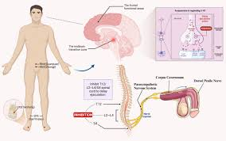 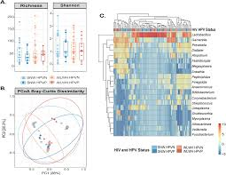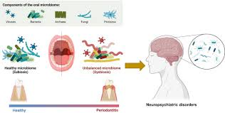
Le Microbiome, Une Vraie Prise de Conscience
Aujourd'hui, nous allons parler non seulement de la peau, mais aussi de son microbiome. La peau régule les échanges entre le milieu extérieur et le corps, constituant une barrière plus ou moins perméable. Ce qui est nouveau, et qui intéresse de plus en plus les scientifiques, ce sont les microorganismes qui ont colonisé cette peau. Ces micro-organismes sont nos meilleurs alliés pour la santé et la beauté !
Le Microbiote
Notre peau et notre corps sont peuplés de micro-organismes invisibles à l'œil nu. Leur composition change selon leur emplacement (bouche, peau, vagin, tube digestif) et est propre à chaque individu. Ces micro-organismes font partie intégrante de nous et interagissent avec le milieu extérieur ainsi qu'avec notre propre corps.
Les bactéries du microbiote cutané sont indispensables à notre bien-être et protègent notre peau en formant un biofilm. Elles vivent en symbiose avec nos cellules et nous défendent contre les agents pathogènes.
Le Microbiote Cutané
Le microbiote cutané, aussi appelé biofilm, est un écosystème complexe qui vit sur la surface et dans les couches superficielles de l’épiderme. Il est constitué de milliers de bactéries, champignons, virus et arthropodes. La peau d'un adulte héberge environ 1 000 milliards de bactéries et 1 000 espèces de micro-organismes.
La principale fonction du microbiote cutané est de protéger la peau contre l'invasion de bactéries opportunistes et pathogènes, tout en stimulant le système immunitaire cutané.
Le Microbiome
Le microbiome désigne l’environnement dans lequel évolue le microbiote. Cet écosystème diversifié est essentiel pour maintenir l’équilibre d’une peau saine. Tout déséquilibre dans ce microbiome peut entraîner des maladies dermatologiques comme les allergies et infections.
Les facteurs intrinsèques (âge, sexe, génétique, système immunitaire) et extrinsèques (climat, traitements médicamenteux, produits cosmétiques) influencent la composition de notre microbiote cutané.
Un Écosystème Équilibré
Les bactéries participent à la protection de nos cellules, agissant comme boucliers contre les agressions extérieures (UV, pollution, etc.). Il est important de protéger ce microbiote et de ne pas l’éliminer. Un déséquilibre peut entraîner des problèmes de peau tels que la dermatite atopique ou l’acné.
Impact de l'Environnement sur le Microbiote
Les facteurs extrinsèques, comme la température, l'humidité, les traitements médicamenteux ou même les produits cosmétiques, ont un impact direct sur la composition du microbiote cutané. Par exemple, l'usage excessif de savons alcalins peut altérer le pH de la peau et perturber l'équilibre du microbiome.
Impact du pH de la Peau
Le pH de la peau, légèrement acide, varie entre 4 et 7. Il est maintenu à des valeurs basses par le biofilm et protège contre les infections microbiennes. Des variations de pH peuvent résulter de l'utilisation de produits cosmétiques, de l'eau ou de perturbations de la barrière hydrolipidique.
Hygiène et Cosmétiques
Pour préserver l'équilibre du microbiome cutané, il est essentiel d’adopter une hygiène douce et d'utiliser des produits cosmétiques adaptés. Les produits à pH acide (environ 5) sont idéaux pour nourrir la flore cutanée et maintenir un microbiome équilibré.
Les Bonnes Pratiques pour Protéger l’Écosystème Cutané
Éviter les produits lavants alcalins, comme les savons et gels douches conventionnels.
Privilégier des produits sans conservateurs chimiques agressifs et nourrissants.
Bannir l'eau très chaude, qui perturbe le microbiote cutané.
Zoom sur les Prébiotiques et les Probiotiques
Les Prébiotiques : La Nourriture des Bonnes Bactéries
Les prébiotiques sont des ingrédients alimentaires non digestibles (fibres, sucres) qui nourrissent les bonnes bactéries de la peau. Ils stimulent la croissance des bactéries bénéfiques et renforcent les défenses immunitaires.
Les Probiotiques : Nos Bonnes Bactéries
Les probiotiques sont des bactéries vivantes qui rééquilibrent la flore cutanée et protègent la barrière épidermique. Les lactobacilles sont les souches les plus utilisées et étudiées pour leur efficacité.
Un Symbiotique
Un symbiotique est l’association d’un probiotique et d’un prébiotique. Cette combinaison synergique est présente dans certains produits comme notre masque enzymatique.
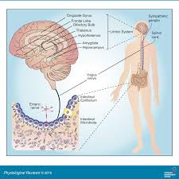 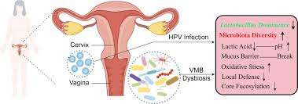
Sécheresse Oculaire et Microbiome des Yeux
La sécheresse oculaire est une condition commune où les yeux ne produisent pas assez de larmes, ou les larmes s'évaporent trop rapidement, ce qui entraîne une inflammation et des dommages à la surface de l'œil.
Le Rôle du Microbiome Oculaire
Des recherches récentes suggèrent que le microbiome des yeux, c'est-à-dire les micro-organismes qui vivent sur la surface de l'œil, pourrait jouer un rôle dans la sécheresse oculaire. Tout comme le microbiome intestinal, le microbiome oculaire est composé de bactéries bénéfiques qui aident à maintenir la santé de l'œil.
Impact du Microbiome sur la Sécheresse Oculaire
Un déséquilibre dans le microbiome oculaire peut conduire à une inflammation et à des infections, contribuant ainsi à la sécheresse oculaire. Par exemple, certaines bactéries bénéfiques produisent des substances qui aident à lubrifier l'œil et à protéger contre les agents pathogènes. Lorsque ces bactéries bénéfiques sont réduites, la protection naturelle de l'œil est compromise, ce qui peut entraîner une sécheresse.
Prévention et Traitement
Pour prévenir et traiter la sécheresse oculaire, il est essentiel de maintenir un microbiome oculaire équilibré. Cela peut inclure des pratiques d'hygiène appropriées, l'utilisation de larmes artificielles, et dans certains cas, des probiotiques conçus spécifiquement pour la santé des yeux. Des études supplémentaires sont nécessaires pour mieux comprendre la relation entre le microbiome oculaire et la sécheresse oculaire, mais cette approche prometteuse pourrait ouvrir la voie à de nouveaux traitements.
Le Microbiote Intestinal et Son Impact sur le Bien-Être
Le Microbiote Intestinal
Le microbiote intestinal est constitué de micro-organismes qui vivent dans notre intestin et qui ont un impact majeur sur notre santé physique et mentale.
Comportement
Le microbiote influence les neurotransmetteurs, ce qui peut affecter notre humeur, notre niveau de stress et nos émotions. Par exemple, certains types de bactéries intestinales peuvent produire des substances chimiques qui influencent la sérotonine, un neurotransmetteur souvent appelé "hormone du bonheur".
Sommeil
Une flore intestinale équilibrée contribue à une meilleure régulation du sommeil en influençant la production de mélatonine, l'hormone du sommeil. Des études ont montré que des perturbations dans le microbiote intestinal peuvent entraîner des troubles du sommeil et des insomnies.
Qualité de vie
Un microbiote sain peut améliorer la digestion, renforcer le système immunitaire et favoriser une meilleure santé générale. Une bonne santé intestinale est essentielle pour l'absorption des nutriments et la protection contre les infections. De plus, un microbiote équilibré peut aider à réduire l'inflammation dans le corps.
Longévité
Le microbiote pourrait jouer un rôle crucial dans la prévention des maladies liées à l'âge et favoriser une vie plus longue et en meilleure santé. Par exemple, un microbiote diversifié est associé à une meilleure santé cardiovasculaire et à une réduction du risque de maladies chroniques comme le diabète de type 2 et l'obésité.
Qu'est-ce que le Microbiote Intestinal ?
Le microbiote intestinal est l'ensemble des milliards de micro-organismes qui résident dans notre système digestif. Ces bactéries, virus et autres micro-organismes jouent un rôle fondamental dans notre santé globale, influençant divers aspects de notre bien-être physique et mental.
Impact sur le Comportement
Des recherches récentes ont révélé un lien étroit entre notre microbiote intestinal et notre comportement. Le microbiote influence la production de neurotransmetteurs, qui sont des substances chimiques responsables de la communication entre les cellules nerveuses du cerveau. Un microbiote équilibré peut améliorer l'humeur et réduire les symptômes d'anxiété et de dépression.
Par exemple, certaines souches bactériennes peuvent produire de la sérotonine, un neurotransmetteur essentiel à la régulation de l'humeur. Un déséquilibre du microbiote peut contribuer à des troubles de l'humeur, de l'anxiété et même de la dépression.
Impact sur le Sommeil
Le microbiote intestinal joue également un rôle dans la qualité de notre sommeil. Il est prouvé que certaines bactéries intestinales influencent la production de mélatonine, l'hormone qui régule les cycles de sommeil. Un déséquilibre de la flore intestinale peut perturber cette production, affectant ainsi la qualité du sommeil.
Un microbiote sain contribue à une meilleure régulation du sommeil, favorisant des cycles de sommeil plus réparateurs et une meilleure gestion du stress.
Impact sur la Qualité de Vie
Un microbiote intestinal équilibré a un impact direct sur notre qualité de vie. Il peut influencer notre niveau d'énergie, notre digestion et même notre fonction immunitaire. Une flore intestinale saine permet de mieux digérer les aliments, de mieux absorber les nutriments et de réduire l'inflammation, ce qui contribue à une meilleure santé générale.
Les déséquilibres du microbiote, souvent appelés dysbiose, peuvent entraîner des troubles digestifs, une mauvaise absorption des nutriments et une augmentation des risques de maladies chroniques, comme les maladies cardiaques ou le diabète de type 2.
Impact sur la Longévité
Le microbiote intestinal a un rôle dans le vieillissement et la longévité. Un microbiote équilibré peut aider à prévenir l'inflammation chronique, qui est un facteur clé du vieillissement prématuré et des maladies liées à l'âge. Les scientifiques étudient actuellement comment un microbiote sain pourrait contribuer à augmenter la durée de vie et à améliorer la qualité de vie des personnes âgées.
Des recherches suggèrent que maintenir un microbiote intestinal diversifié et équilibré pourrait être un facteur clé pour vivre plus longtemps et en meilleure santé.
Le développement humain comme priorité pour la croissance économique: les recherches de Zaher Nourredine -
Zaher Nourredine est un autodidacte passionné, formé pour apprendre de manière autonome. Chaque jour, il s'engage à élargir ses connaissances et à perfectionner ses compétences grâce à une approche proactive de l'apprentissage. Fort de sa capacité à s'auto-former, Zaher explore continuellement de nouveaux sujets et s'adapte aux évolutions technologiques et scientifiques.
L'intelligence artificielle (IA) joue un rôle croissant dans nos vies. Avec son expansion rapide, des questions cruciales sur la conscience, l'éthique et la morale de l'IA se posent.
La conscience de l'IA
Bien que les IA soient capables de traiter des informations et de résoudre des problèmes complexes, elles ne possèdent pas de conscience. La conscience implique une compréhension subjective du soi et du monde, ce qui dépasse les capacités actuelles des systèmes d'IA.
Éthique dans l'IA
Les questions éthiques liées à l'IA incluent la transparence, l'équité, la confidentialité et la responsabilité. Il est essentiel de développer des algorithmes qui respectent ces principes afin d'éviter les biais, les discriminations et les abus de pouvoir.
Morale et décisions de l'IA
La morale dans l'IA soulève des dilemmes complexes, notamment dans des domaines tels que les véhicules autonomes ou la médecine. Les développeurs doivent intégrer des systèmes décisionnels éthiques pour garantir que les actions des IA soient alignées sur des valeurs humaines universelles.
Conclusion
L'avenir de l'IA nécessite une approche multidisciplinaire impliquant des experts en technologie, philosophie et droit. Ensemble, ils peuvent garantir que l'IA reste un outil bénéfique pour l'humanité, respectant des normes éthiques et morales élevées.
Pour en savoir plus sur ce sujet, visitez notre site web.
Qualités Professionnelles et Personnelles
Qualités Professionnelles et Personnelles
Excellentes compétences en communication et écoute active
Orientation client et résolution rapide des problèmes
Esprit d'équipe et collaboration inter-départements
Gestion efficace du temps et des priorités
Adaptabilité et apprentissage rapide des nouvelles technologies
Empathie, patience, proactivité et persévérance
Compétences Métaphysiques pour Zaher Nourredine
1. Vision et Clarté de l'Objectif
Développement de la Vision : Développer une vision claire et inspirante pour l'organisation.
Alignement des Objectifs : Aider les employés à aligner leurs objectifs personnels avec ceux de l'organisation.
2. Conscience de Soi et Gestion du Stress
Pratiques de Pleine Conscience : Techniques pour améliorer la conscience de soi et réduire le stress.
Équilibre Émotionnel : Maintenir un équilibre émotionnel pour des décisions éclairées.
3. Intuition et Prise de Décision
Développement de l'Intuition : Renforcer l'intuition pour des décisions complexes.
Évaluation Holistique : Prendre en compte les données tangibles et intuitives.
4. Énergie et Motivation
Gestion de l'Énergie : Techniques pour maintenir motivation et engagement.
Techniques de Visualisation : Fixer des objectifs et motiver les employés.
5. Connaissance Transcendante et Innovation
Exploration des Connaissances Supérieures : Inspirer innovation par des perspectives non conventionnelles.
Ouverture d'Esprit : Valoriser les idées novatrices.
6. Compassion et Relationnel
Empathie Profonde : Créer des relations authentiques et significatives.
Communication Empathique : Résoudre les conflits et améliorer la coopération.
7. Alignement Corps-Esprit-Âme
Pratiques Holistiques : Équilibrer le corps, l'esprit et l'âme.
Bien-être Intégratif : Inclure santé mentale, émotionnelle et spirituelle.
8. Éthique et Intégrité
Adhérence aux Principes : Maintenir une haute intégrité dans toutes les décisions.
Transparence : Encourager honnêteté et transparence dans les communications.
Compétences Techniques Précises
Gestion des Dossiers Médicaux Électroniques : Maîtrise de logiciels comme Epic et Cerner.
Technologies de Téléconsultation : Expertise avec Doxy.me et Teladoc.
Outils de Diagnostic : Utilisation de l'imagerie médicale comme l'IRM et le scanner.
Compétences en Informatique Médicale : Analyse de données, SQL, Python.
Soins Infirmiers : Techniques de soins, phlébotomie et cathéters intraveineux.
Applications de Santé Mobile : Intégration d'applications pour suivi à domicile.
Compétences Interpersonnelles
Communication : Continuer à affiner ses compétences en communication pour mieux interagir avec les patients et les collègues, en particulier dans des situations stressantes.
Empathie et Écoute : Maintenir un haut niveau d’empathie et d’écoute active pour renforcer la confiance et le confort des patients.
Développement de la Collaboration Inter-départements
Esprit d’équipe : Encourager un esprit de collaboration et de solidarité entre les différents départements, par exemple en organisant des réunions régulières et des ateliers de team building.
Partage des connaissances : Mettre en place des sessions de partage de connaissances pour échanger des bonnes pratiques et des innovations entre collègues.
Adoption de Nouvelles Technologies
Exploration des innovations : Être proactif dans l’exploration et l’adoption de nouvelles technologies qui peuvent améliorer les soins aux patients et l’efficacité opérationnelle.
Feedback et ajustement : Recueillir et analyser les retours d’expérience des patients et du personnel pour ajuster et améliorer continuellement l’utilisation des technologies.
Gestion Efficace du Temps
Priorisation : Utiliser des techniques de gestion du temps comme la matrice d’Eisenhower pour prioriser les tâches importantes et urgentes.
Déconnexion : Assurer un équilibre travail-vie personnelle pour éviter le burnout, en prenant régulièrement du temps pour se reposer et se ressourcer.
Engagement et Proactivité
Initiative : Prendre des initiatives pour améliorer les processus existants et proposer de nouvelles idées lors des réunions.
Résilience : Développer la résilience pour gérer les situations de stress et les défis quotidiens avec un esprit positif et une attitude proactive.
Focus sur la Qualité des Soins
Feedback des patients : Mettre en place des systèmes pour recueillir et analyser le feedback des patients afin d’améliorer continuellement la qualité des soins.
Indicateurs de performance : Suivre des indicateurs de performance clés (KPI) pour mesurer l’efficacité des soins et identifier les domaines à améliorer.
Sécurité et Confidentialité des Données
Mises à jour régulières : S’assurer que tous les systèmes et logiciels sont régulièrement mis à jour pour protéger contre les cybermenaces.
Formation en sécurité : Former régulièrement le personnel sur les meilleures pratiques en matière de sécurité et de confidentialité des données.
Les 12 meilleurs aliments pour prendre soin de son microbiote Comment le microbiote agit-il sur notre santé ?Le microbiote intestinal, le Super Héro de tes intestins.Microbiote intestinal (flore intestinale) : tout ce qu’il faut savoir.Comment améliorer son microbiote pour une santé .Top 10 des aliments bons pour le microbiote intestinal
Des études révèlent que notre microbiote lorsque notre alimentation ne permet plus sa diversfication des bacteries de notre instestin décède cette mort entraine pour son hôte participe la décomposition du corps.
PDPM (Patient Driven Payment Model) est un modèle de classification utilisé dans le cadre du système de paiement prospectif des établissements de soins infirmiers qualifiés (Skilled Nursing Facilities, SNF). Il classe les patients SNF en groupes basés sur leurs besoins individuels de soins et diagnostics. L'objectif est de garantir que le paiement soit plus étroitement aligné avec l'état du patient et les soins qu'il nécessite.
ICD-10 (International Classification of Diseases, 10th Revision) est un système de codage utilisé pour documenter les diagnostics et les conditions. Dans le contexte du PDPM, les codes ICD-10 sont utilisés pour identifier le diagnostic principal et les comorbidités des patients, ce qui aide à déterminer le groupe de paiement approprié selon le PDPM.
En somme, les codes ICD-10 sont utilisés dans le cadre du PDPM pour classer les patients et déterminer le paiement approprié en fonction de leurs diagnostics spécifiques et de leurs besoins en soins.
This is a heavily interactive web application, and JavaScript is required. Learn more about Bluesky at bsky.social and atproto.com. This is the home page.
This is a React Native application, written in the TypeScript programming language. It builds on the atproto TypeScript packages (like @atproto/api ), code ...
Kit de démarrage de https://totallifechanges.com/m. Starter pack by @bovil1.bsky.social. Join Bluesky. 2.8M joined this week. You'll follow these people and 2 ...
Jan 16, 2024 — Matomo dev team wrote: _Our development confirmed the app does not send a referrer, so it is only possible to populate as direct entry ...
Nov 22, 2024 — This week, we looked at some of the data that The Economist described and analyzed in their recent article, "The anti-politics eating the West." ...
Merci d'avoir résolu ce problème. Votre compte est désormais prêt à être utilisé.
Afin d'éviter les éventuels verrouillages ou suspensions de votre compte, veuillez passer en revue les
Règles de X et nous aider à garantir un
environnement sûr sur la plateforme.
Starter pack, here is a collection of 80 philosophy-related organisations, journals and research groups currently on Bluesky: go.bsky.app/RMuQBg3. New orgs ...
Alter ego es el dispositivo que te permite tener todo el internet
5 days ago — A Rússia acabou de lançar o trailer do primeiro filme. gravado totalmente no espaço. A sinopse do filme é sobre uma cirurgiã. que só teve um mês ...
Merci d'avoir résolu ce problème. Votre compte est désormais prêt à être utilisé.
Afin d'éviter les éventuels verrouillages ou suspensions de votre compte, veuillez passer en revue les
Règles de X et nous aider à garantir un
environnement sûr sur la plateforme.
Will Cornel West turn the 2024 presidential election? A four-way race might not go as well for Joe Biden in 2024 as it did for Truman in 1948. Even though Biden gained a healthy popular vote victory in 2020, a shift of a handful of votes in three ...
The Worst 45 Minute Film You Will Ever See | TIME Israelis visit the Nova rave massacre site, on January 11, 2024, in Re'im, Israel. Now open to the public, the site of the October 7th Hamas attack on the Nova rave has become an informal national ...
The White House – The White House The Administration. Donald J. Trump 45th President of the United States; Melania Trump First Lady of the United States; Michael R. Pence Vice President of the United States; Karen Pence Second Lady of the United States; Executive Offices. Council of Economic Advisers; Council on Environmental Quality.
Liens Utiles
ISO - International Organization for Standardization Bienvenue sur la plateforme de consultation en ligne (OBP). Accédez aux toutes dernières mises à jour des normes ISO, des symboles graphiques, des codes et des termes et définitions.
Brookings Will Cornel West turn the 2024 presidential election? A four-way race might not go as well for Joe Biden in 2024 as it did for Truman in 1948.
TIME The Worst 45 Minute Film You Will Ever See. Israelis visit the Nova rave massacre site, on January 11, 2024, in Re'im, Israel.
The White House – The White House The Administration. Donald J. Trump 45th President of the United States; Melania Trump First Lady of the United States; Michael R. Pence Vice President of the United States; Karen Pence Second Lady of the United States; Executive Offices. Council of Economic Advisers; Council on Environmental Quality.
Plus de 4 000 photos gratuites de Zen et de Méditation
Trouvez des photos de Zen. Libre de droits, pas d'attribution requise, des images de haute qualité.
Welcome to The Zen Zone. A minimalistic meditation area built by Tim Holman, designed to calm you down via the power of small, captivating, mildly amusing, and oddly satisfying activities. Feel the Zen! Let's get started.
Rituels de bien-être Agen 47 - CARRE ZEN
Et si vous vous accordiez une parenthèse dédiée au repos... une pause de récupération ! Décrochez du quotidien, lâchez-prise, et ressourcez-vous avec nos rituels énergétiques :
Смотреть видео от любимых блогеров | Дзен Здесь каждый день миллионы человек смотрят видео в разных тематиках: от гейминга до путешествий, от бьюти до технологий. А умные алгоритмы рекомендуют публикации, учитывая интересы пользователей.
Le Republic P-47D Thunderbolt est équipé d'un moteur Pratt & Whitney R-2800-59 de 2 300 ch. À l’occasion de la parution de son livre Concorde, l’icône d’un idéal, Adrien Motel sera présent…
Date du jour : 24 decembre 2024
Valeurs de 47th POTUS TRUMP47 et leur Intérêt
Le 47th POTUS (TRUMP47) est une cryptomonnaie qui a été créée en l'honneur de Donald Trump, le 47ème président des États-Unis. Cette cryptomonnaie a attiré l'attention des investisseurs en raison de son association avec Trump et de ses promesses de soutenir les cryptomonnaies pendant sa présidence.
Valeurs de TRUMP47 :
Le prix actuel de TRUMP47 est de $0.0001881.
La capitalisation boursière de TRUMP47 est de $187,914.
Le volume de trading sur 24 heures est de $2,830.11.
Intérêt dans la présidence de Donald Trump :
Donald Trump a promis de faire des États-Unis la "capitale mondiale de la crypto".
Il a proposé la création d'une réserve stratégique de Bitcoin pour les États-Unis.
Trump a également exprimé son soutien à l'industrie du minage de Bitcoin aux États-Unis.
Intérêt pour le Bitcoin :
La présidence de Trump a été perçue comme favorable aux cryptomonnaies, ce qui a entraîné une augmentation significative du prix du Bitcoin.
Les investisseurs voient en Trump un défenseur des cryptomonnaies, ce qui a renforcé la confiance dans le marché.
Les ETF Bitcoin ont enregistré des volumes entrants records depuis la victoire de Trump aux élections.


 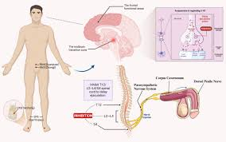 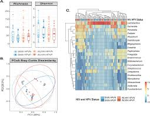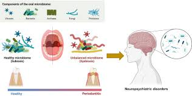
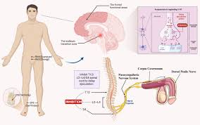 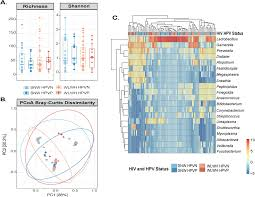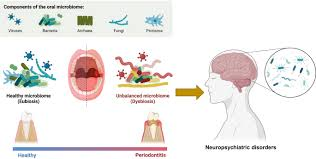 
 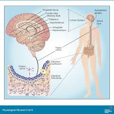 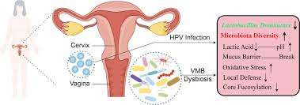
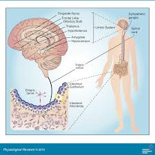 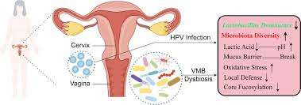
 Wixsite
Wixsite